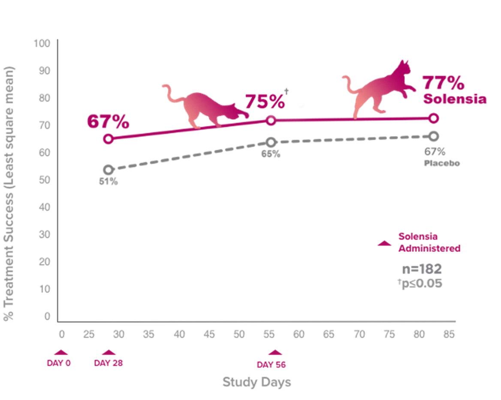
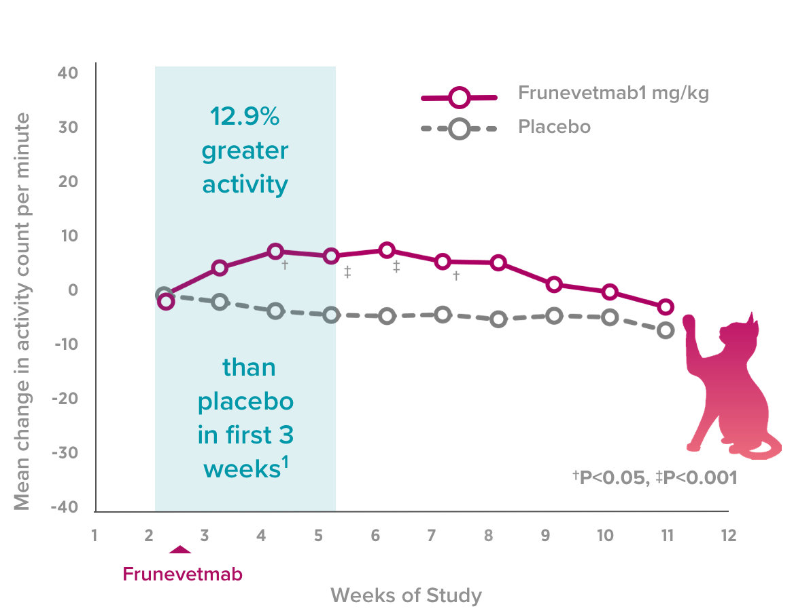

monoclonal antibody injectable therapy administered monthly to control feline osteo arthritis (OA) pain in cats. It is an injectable monoclonal antibody therapy administered monthly to control feline osteo arthritis (OA) pain.
Feline
Frunevetmab
Injection
7mg
2 vial/box
Solensia is a monoclonal antibody (mAb)
Solensia is a monoclonal antibody that specifically targets Nerve Growth Factor, a key mediator of OA pain.
In 2 clinical studies conducted in the US and EU with a total of 559 dogs, Librela was shown to reduce canine OA pain, which can improve overall quality of life.

Solensia significantly improved mobility vs. placebo.*

*Using objective and subjective measurement
If a vaccine is to be administered at the same time, the vaccine should be administered at a different site.
Solensia should not be administered to:
Pregnant women, women trying to conceive, and breastfeeding women should take extreme care to avoid accidental self-injection. Hypersensitivity reactions, including anaphylaxis, could potentially occur in the case of accidental self-injection.
See full Solensia Prescribing Information. For use in cats only. Women who are pregnant, trying to conceive or breastfeeding should take extreme care to avoid self-injection. Hypersensitivity reactions, including anaphylaxis, could potentially occur with self-injection. SOLENSIA should not be used in breeding cats or in pregnant or lactating queens. SOLENSIA should not be administered to cats with known hypersensitivity to frunevetmab. The most common adverse events reported in a clinical study were vomiting and injection site pain. Solensia may be associated with scabbing of the head and neck, dermatitis, and pruritus.